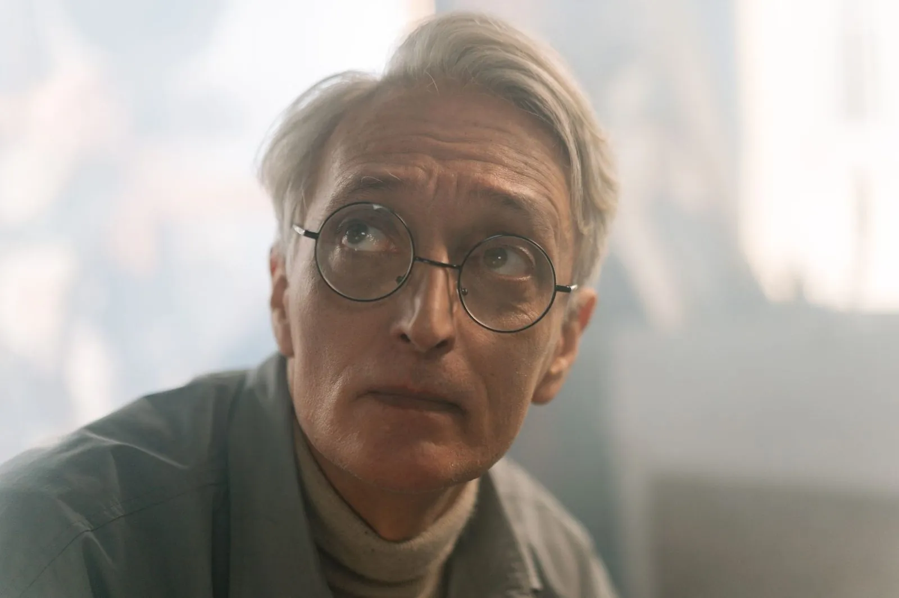
Usa prótese que solta?
Com implantes, os dentes ficam fixos e você volta a mastigar sem medo.
Ver dentadura fixaNa primeira consulta, o escaneamento 3D mostra na tela como vai ficar. Você sai com o plano, o prazo e o valor por escrito.
Para quem é

Com implantes, os dentes ficam fixos e você volta a mastigar sem medo.
Ver dentadura fixa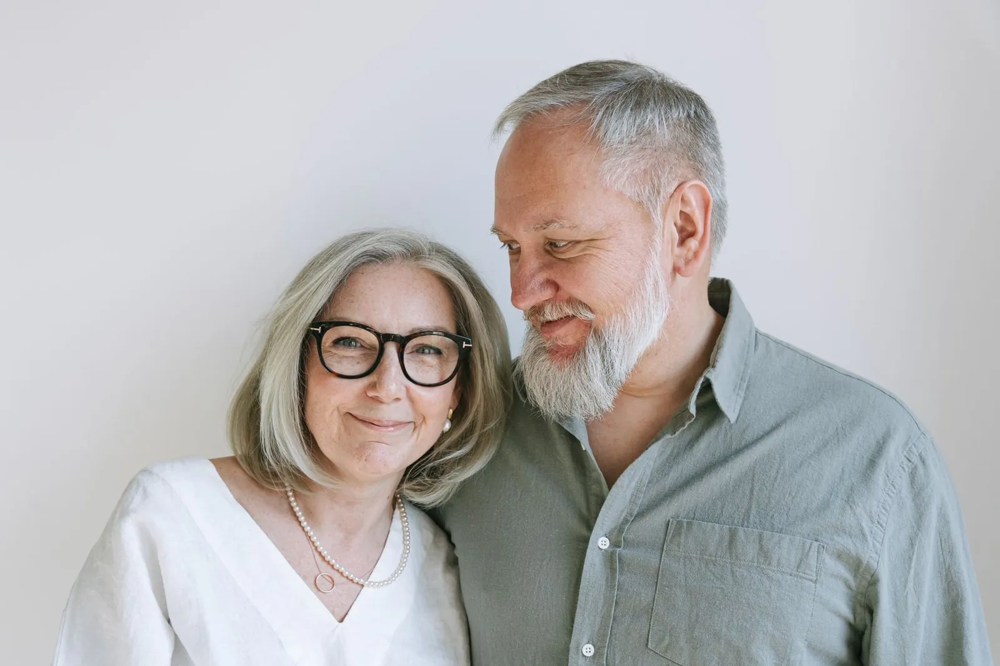
Um implante repõe o dente que falta, com uma coroa na cor dos seus, sem mexer nos vizinhos.
Ver implante unitário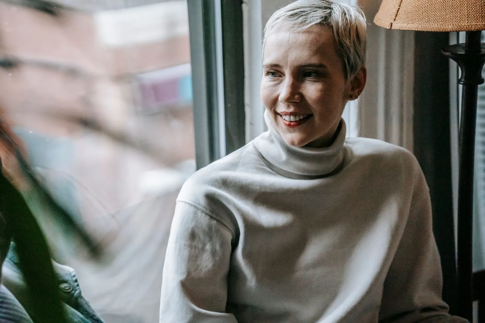
Lentes na cor e no formato do seu rosto, sem branco artificial.
Ver lentes de contatoTratamentos
Na avaliação, a doutora explica o que faz sentido para o seu caso, e você decide com calma.
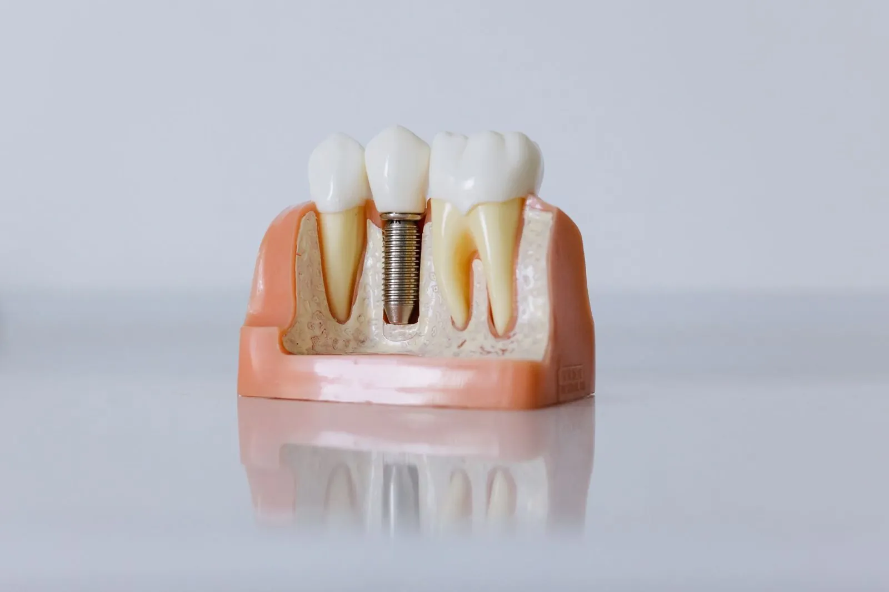
Repõe um dente perdido com uma raiz de titânio e uma coroa na cor dos seus dentes.
Saiba maisUma arcada inteira presa em implantes, para quem quer deixar a prótese móvel para trás.
Saiba mais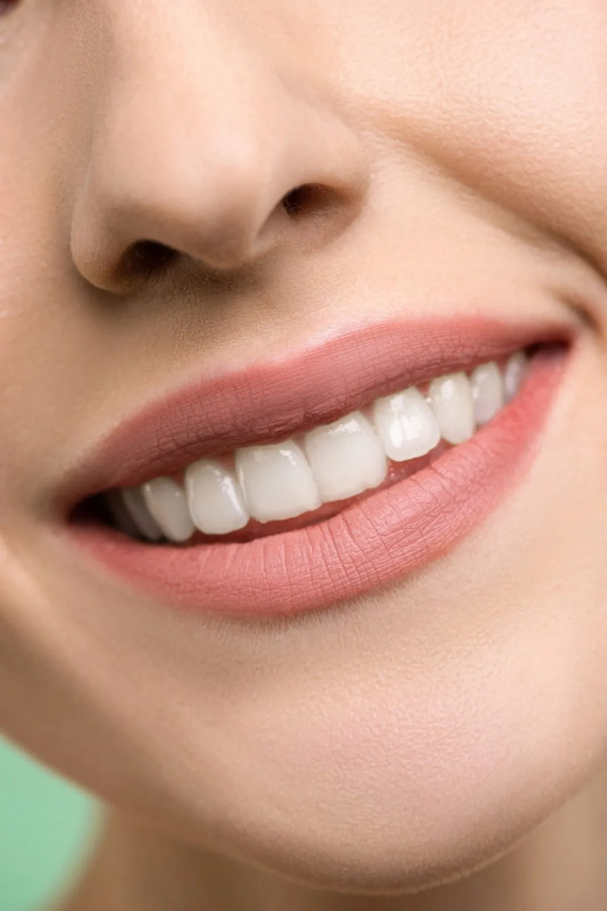
Lâminas finas que corrigem cor e formato, desenhadas para o seu rosto.
Saiba maisComo funciona
Da primeira conversa ao sorriso pronto, você sabe o que vem a seguir e quanto vai custar.
Conversa sem pressa sobre o que te incomoda.
Um scanner faz a imagem da sua boca, sem massinha.
Você vê a simulação e leva o plano, o prazo e o valor.
Com sedação consciente, se você preferir.
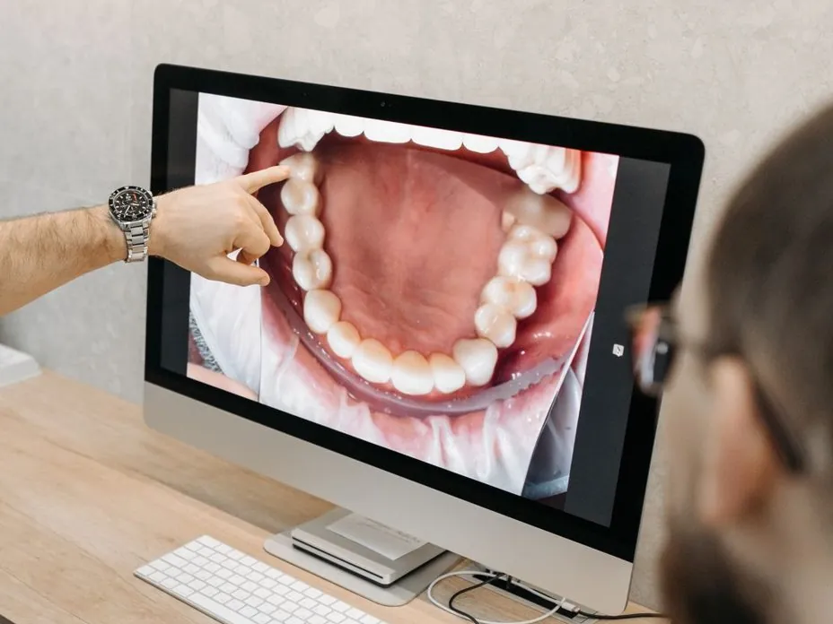
Nosso combinado com você
A primeira consulta dura cerca de uma hora. Dá tempo de contar o que incomoda e tirar todas as dúvidas.
Anestesia bem feita e sedação consciente para quem tem medo. Você sabe antes o que vai sentir.
Você sai com o plano, o prazo e o valor por escrito. Nada muda no meio do caminho sem você saber.
No fim, o espelho
O tratamento só termina quando você aprova o resultado no espelho, ao lado da doutora.
Antes e depois
Passe o mouse ou toque em cada caso para abrir. Depois, arraste a linha para comparar.
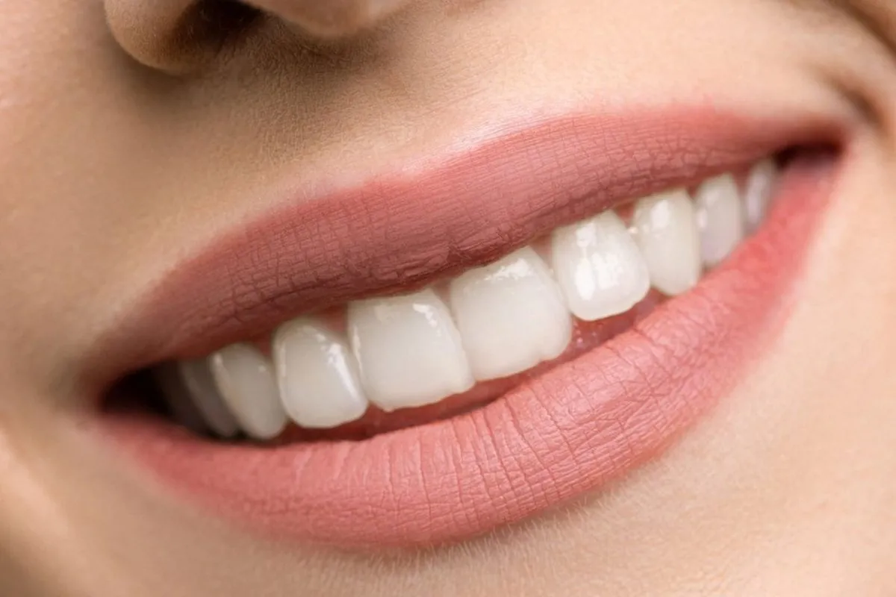
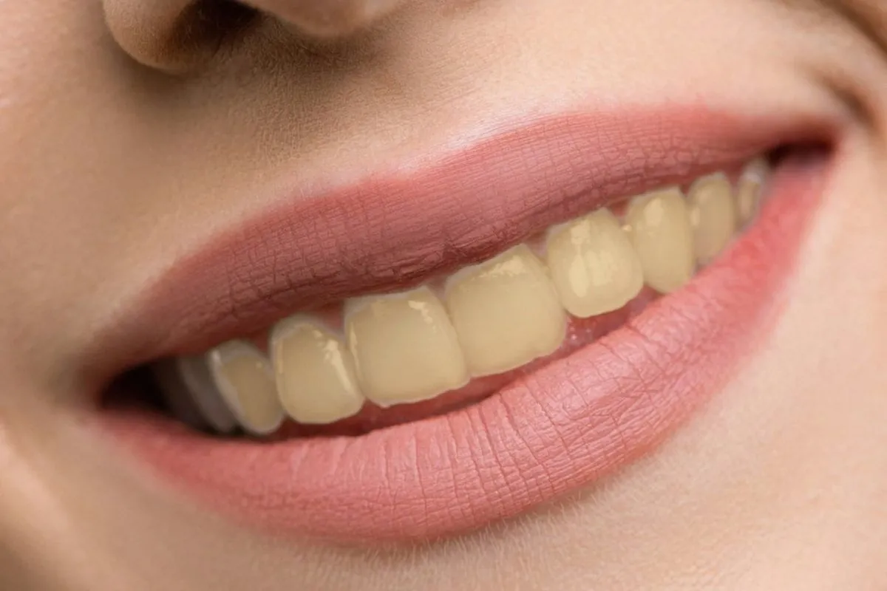
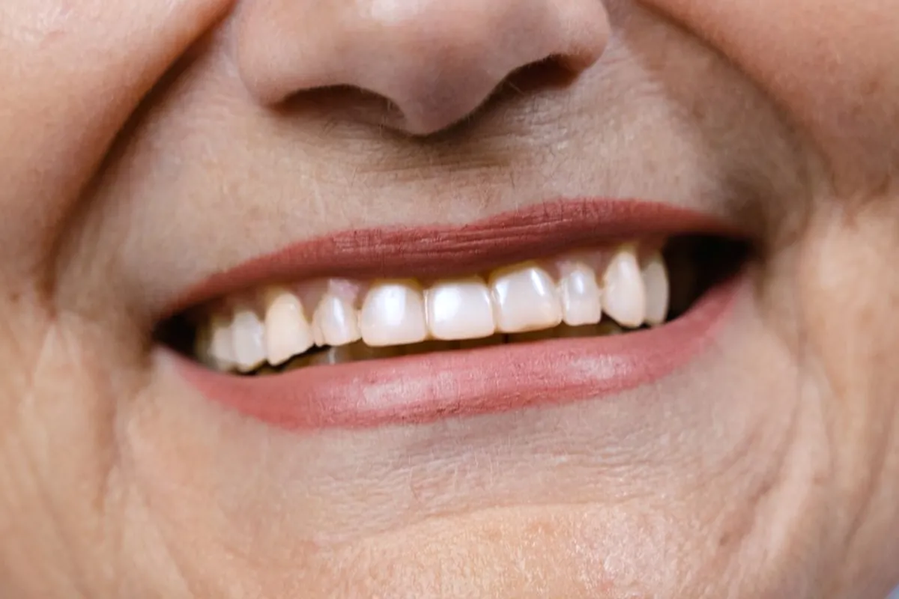
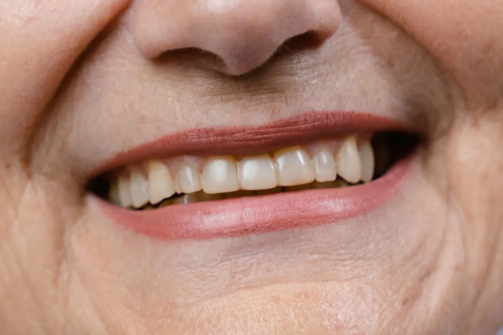
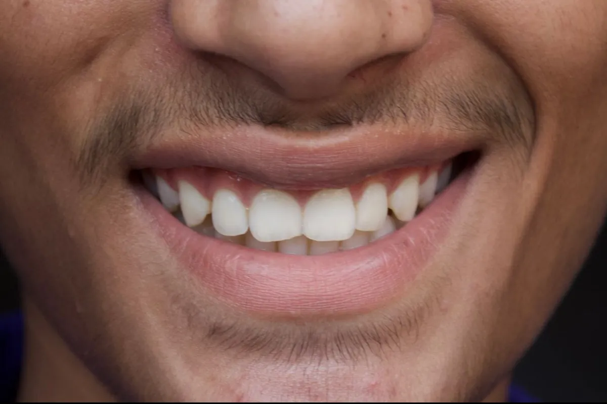
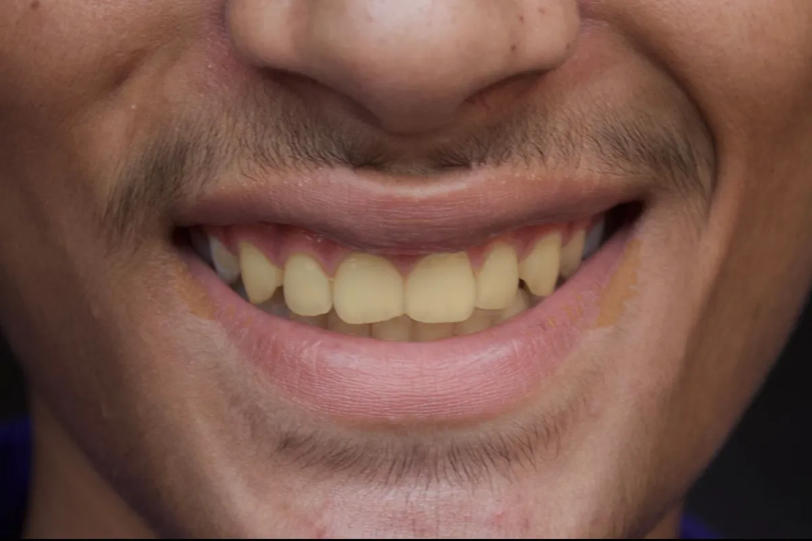
O RESULTADO VARIA DE PESSOA PARA PESSOA
Quem cuida de você
“Eu explico cada etapa antes de fazer. Você nunca é pego de surpresa.”
Dra. Lívia Andrade, implantodontista, 12 anos em Ribeirão Preto. Cuida de implantes e lentes com planejamento digital e atende cada paciente do começo ao fim do tratamento.
RESPONSÁVEL TÉCNICA · CRO-SP 000000
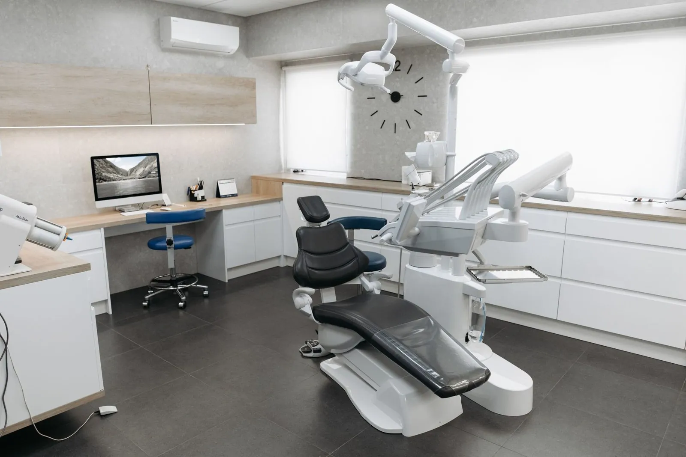
Quem já passou por aqui
Eu tinha pavor de dentista. A doutora explicou cada passo antes e, com a sedação, nem vi o tempo passar.
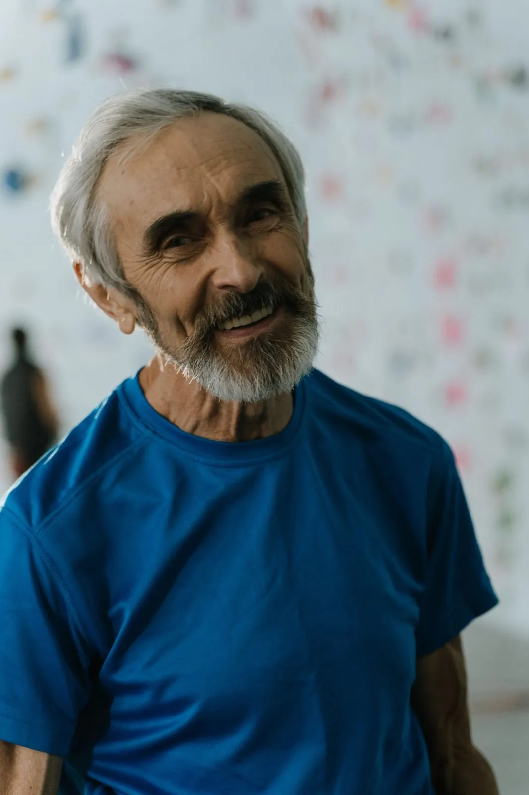
Vi na tela como ia ficar antes de começar. As lentes ficaram com cara de dente mesmo.
Voltei a comer churrasco sem medo da prótese soltar. Melhor decisão que tomei.
Saí da avaliação com tudo por escrito: plano, prazo e valor. Nada de surpresa no meio do caminho.
Atendimento sem pressa, num sábado de manhã. Explicaram até o que eu não tinha perguntado.
Dúvidas
Não achou a sua? A recepção responde pelo WhatsApp.
A cirurgia é feita com anestesia local, e você pode escolher a sedação consciente para ficar relaxado o tempo todo. Depois, o incômodo costuma ser leve e passa em poucos dias.
Depende do tratamento e do seu caso. As lentes costumam ficar prontas em poucas semanas; o implante precisa de alguns meses para firmar no osso. O prazo do seu plano sai por escrito na avaliação.
Depende do plano de cada pessoa. Na avaliação você recebe o valor por escrito, junto com o plano e o prazo.
Cada convênio cobre coisas diferentes. Mande uma mensagem para a recepção com o nome do seu plano que ela explica como fica no seu caso.
Na maioria dos casos o desgaste é mínimo ou nenhum. Você vê a simulação antes e decide.
Em muitos casos dá para preparar o osso antes do implante. Os exames da avaliação mostram o que o seu caso precisa, e a doutora explica as opções com calma.